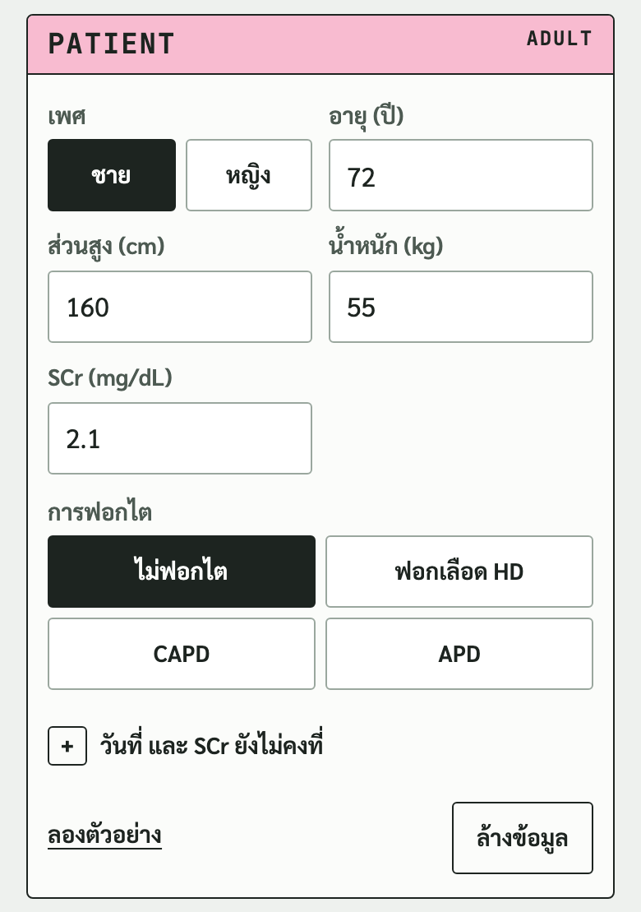
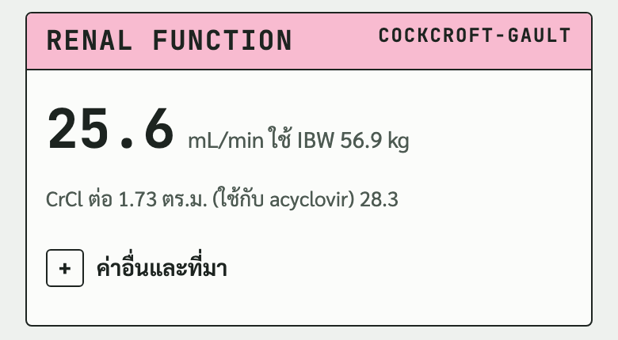
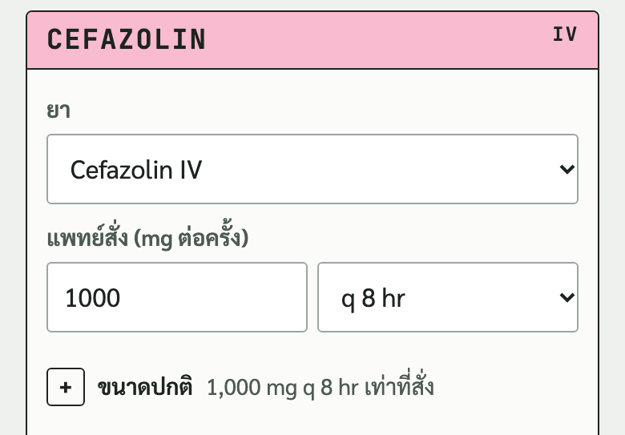
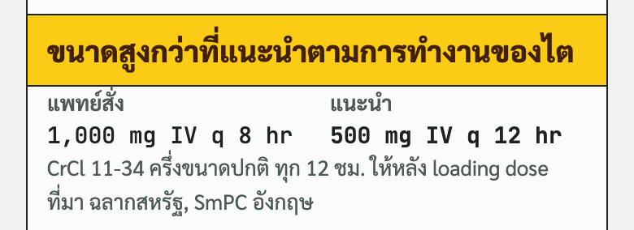
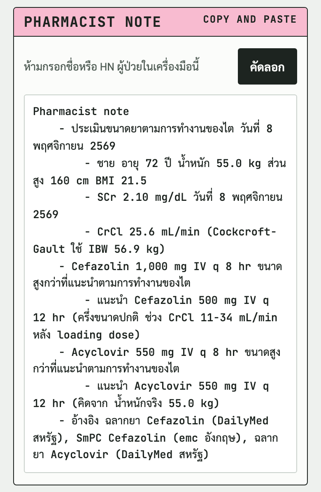
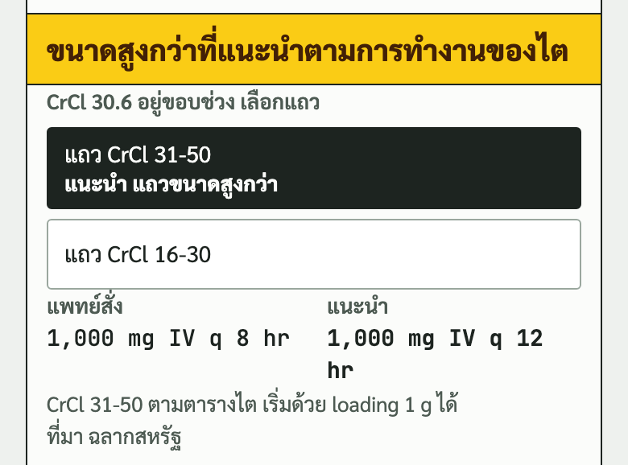
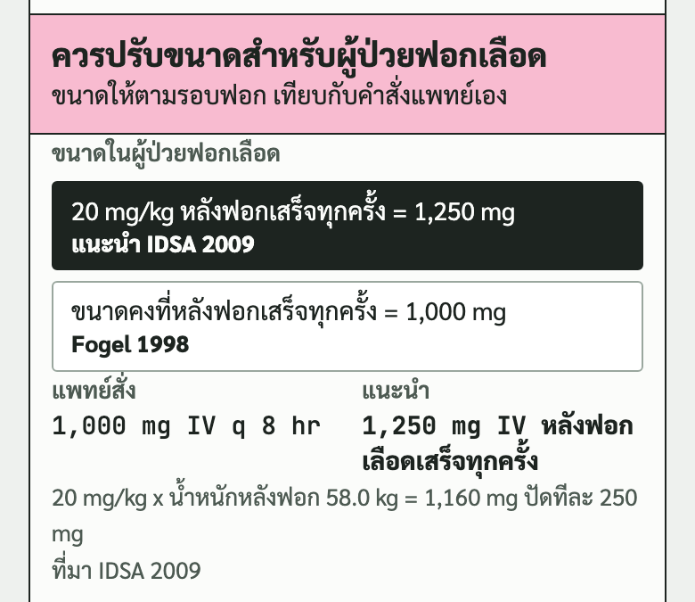

เครื่องมือช่วยเภสัชกรตรวจขนาดยาของผู้ป่วยในที่ต้องปรับตามการทำงานของไต จอเทียบขนาดที่แพทย์สั่งกับขนาดที่แนะนำคู่กัน แล้วให้คัดลอก Pharmacist note ไปวางในบันทึกสหวิชาชีพ
natthaphonyay-hub.github.io/renal-dose-calculator
Ceftriaxone IV, Cefazolin IV, Ceftazidime IV, Acyclovir ทั้ง IV และชนิดกิน และ Amoxicillin-clavulanate ทั้ง IV และชนิดกิน ใส่ได้หลายตัวในผู้ป่วยคนเดียว
ผู้ป่วยอายุต่ำกว่า 18 ปี (จอไม่แสดงขนาดยา), CRRT, ยาที่ใส่ในน้ำยาล้างไตทางช่องท้อง (IP), Amoxicillin-clavulanate IV ในผู้ป่วยล้างไตทางช่องท้อง, Acyclovir ชนิดกินขนาดที่ไม่มีในตารางฉลาก และยาตัวอื่นนอกจากนี้ กรณีเหล่านี้ใช้แหล่งของโรงพยาบาลกับดุลยพินิจของเภสัชกรและแพทย์

เลือกเพศ กรอกอายุ ส่วนสูง น้ำหนัก และ SCr จอรับอายุจำนวนเต็ม 18 ถึง 110 ปี น้ำหนัก 20 ถึง 250 kg ส่วนสูง 120 ถึง 220 cm และ SCr 0.2 ถึง 20 mg/dL นอกช่วงนี้จอให้ตรวจตัวเลขก่อน ไม่คำนวณ
เลือก การฟอกไต ถ้าเลือก ฟอกเลือด HD ช่องน้ำหนักเปลี่ยนเป็น น้ำหนักหลังฟอก และช่อง SCr หายไป
กดเปิด วันที่ และ SCr ยังไม่คงที่ เพื่อแก้วันที่ผล SCr กับวันที่ประเมิน (ตั้งเป็นวันนี้ไว้ให้) ถ้าติ๊ก SCr ยังไม่คงที่ จอขึ้นข้อควรระวังว่า CrCl จากสูตรอาจคลาดเคลื่อน
กด ลองตัวอย่าง เพื่อดูผู้ป่วยชาย 72 ปี 55 kg 160 cm SCr 2.1 ที่ได้ Cefazolin กับ Acyclovir (ภาพในคู่มือมาจากตัวอย่างนี้)

ตัวเลขใหญ่คือ CrCl จากสูตร Cockcroft-Gault หน่วย mL/min ต่อท้ายด้วยน้ำหนักที่ใช้ในสูตร จอเลือกน้ำหนักตาม BMI ให้เอง (น้อยกว่า 18.5 ใช้น้ำหนักจริง, 18.5 ถึงน้อยกว่า 25 ใช้ IBW, 25 ขึ้นไปใช้ AdjBW)
ถ้ามี Acyclovir จอแสดง CrCl ต่อ 1.73 ตร.ม. เพิ่ม เพราะฉลาก Acyclovir ใช้หน่วยนี้
กดเปิด ค่าอื่นและที่มา เพื่อดู CrCl จากน้ำหนักแบบอื่น BMI IBW AdjBW และพื้นที่ผิวกาย

เลือกยา กรอกขนาดต่อครั้งและช่วงห่าง (q 4 ถึง q 48 hr) Amoxicillin-clavulanate กรอกเป็น mg ของ amoxicillin
ขนาดปกติ คือขนาดที่ผู้ป่วยควรได้ถ้าไตปกติ จอใช้ค่านี้คิดขนาดที่ลดแล้ว และตั้งให้เท่ากับที่แพทย์สั่งไว้ก่อน ถ้าแพทย์สั่งขนาดที่ลดมาแล้ว กดเปิดแล้วเลือกปุ่มขนาดปกติหรือกรอกเอง
Acyclovir IV เลือกข้อบ่งใช้ 5 mg/kg (เริมผิวหนัง) หรือ 10 mg/kg (สมองอักเสบ งูสวัด) แล้วกรอกขนาดที่แพทย์สั่งเป็น mg Acyclovir กิน กดเลือกขนาดปกติตามฉลาก 1 ใน 3 แบบ (200 mg 5 ครั้งต่อวัน, 400 mg ทุก 12 ชม., 800 mg 5 ครั้งต่อวัน) ถ้าแพทย์สั่งขนาดที่ลดมาแล้ว เลือกขนาดก่อนลด ช่องความถี่มี 5 ครั้งต่อวัน
Ceftazidime มีช่อง ติดเชื้อรุนแรง จอติ๊กให้เองเมื่อขนาดปกติรวม 6 g ต่อวันขึ้นไป (ขนาดในตารางไตเพิ่ม 50%) เอาออกได้ Ceftriaxone มีช่อง ตับทำงานผิดปกติ
กด เพิ่มยา ใต้การ์ดยาเพื่อใส่ยาตัวต่อไป กด ลบยานี้ เพื่อเอาออก

แถบสีบนสุดบอกผลเทียบกับคำสั่ง (ความหมายของสีอยู่หน้าถัดไป) แพทย์สั่ง กับ แนะนำ อยู่คู่กัน บรรทัดเล็กบอกแถวที่ใช้และ ที่มา
ภาพนี้ Cefazolin 1,000 mg q 8 hr ที่ CrCl 25.6 ตกแถว CrCl 11-34 จอแนะนำครึ่งขนาด 500 mg q 12 hr

note รวมยาทุกตัวในหน้า มีวันที่ประเมิน ข้อมูลผู้ป่วย ค่าไต ผลของยาแต่ละตัว ขนาดที่แนะนำ และอ้างอิง
กด คัดลอก แล้ววางในบันทึกสหวิชาชีพ ข้อความใช้แค่อักษรอังกฤษกับไทย วางแล้วไม่เพี้ยน
| แถบหรือป้าย | ความหมาย |
|---|---|
| แถบสีพื้น | ขนาดเหมาะกับการทำงานของไตแล้ว หรือไม่ต้องปรับขนาด |
| แถบเหลือง | ขนาดสูงกว่าที่แนะนำ หรือขนาดต่อวันเท่ากันแต่ช่วงห่างต่างจากที่แนะนำ |
| แถบฟ้า | ขนาดต่ำกว่าที่แนะนำ |
| แถบชมพู | ผู้ป่วยฟอกเลือดที่ขนาดให้ตามรอบฟอก จอเทียบเองไม่ได้ ให้เภสัชเทียบกับคำสั่งแพทย์ |
| ยังไม่รองรับ | ไม่มีข้อมูลจากแหล่งที่ใช้ จอไม่เสนอขนาด (Amoxicillin-clavulanate IV ในผู้ป่วยล้างไตทางช่องท้อง หรือ Acyclovir กินขนาดที่ไม่มีในตารางฉลาก) |
| ป้ายแดง | เกินขนาดสูงสุดในฉลาก (Ceftriaxone เกิน 4 g ต่อวัน, Acyclovir เกิน 20 mg/kg ต่อครั้ง) |
| ป้ายเหลือง | Amoxicillin-clavulanate กิน 875 mg ในผู้ป่วย CrCl น้อยกว่า 30 หรือฟอกไต (ฉลากสหรัฐห้าม) |
| ข้อควรระวัง | Ceftriaxone มากกว่า 2 g ต่อวันในผู้ป่วย CrCl 15 ลงไปหรือฟอกไต (ฉลากรับรองว่าไม่ต้องปรับถึง 2 g ต่อวัน และมีรายงานพิษต่อระบบประสาท) |
ช่วง CrCl ในฉลากบางยาซ้อนกันหรือเว้นช่องว่าง เช่น Ceftazidime แถว 31-50 กับ 16-30 ค่า 30.6 ไม่อยู่แถวไหน จอแสดงสองแถวที่ติดกันให้เลือก ป้ายแนะนำอยู่ที่แถวขนาดสูงกว่า และ note เขียนว่าค่าอยู่ขอบช่วง

ขนาดให้ตามรอบฟอก แถบเป็นสีชมพู Cefazolin มีสองทาง คือ 20 mg/kg ตามน้ำหนักหลังฟอก ปัดทีละ 500 mg (IDSA 2009 ทางที่แนะนำ) กับขนาดคงที่ 1 g หรือ 750 mg ถ้าน้ำหนักน้อยกว่า 50 kg (Fogel 1998)

เมื่อแหล่งอ้างอิงแนะนำไม่ตรงกัน จอแสดงทุกทาง ติดป้าย แนะนำ ไว้ทางเดียว กดเลือกทางอื่นได้ ผลและ note เปลี่ยนตาม
| เมื่อไร | ทางที่แนะนำ | อีกทาง |
|---|---|---|
| ค่าไตอยู่ขอบช่วง (ทุกยาที่แบ่งแถวตาม CrCl) | แถวขนาดสูงกว่า | แถวขนาดต่ำกว่า |
| Cefazolin ในผู้ป่วยฟอกเลือด | 20 mg/kg หลังฟอก (IDSA 2009) | ขนาดคงที่ (Fogel 1998) |
| Acyclovir ในผู้ป่วย BMI 30 ขึ้นไป | คิดขนาดจาก AdjBW (Stanford 2026) | IBW (ฉลากสหรัฐ) |
| Acyclovir ฉีดและกิน เมื่อ CrCl ต่อ 1.73 ตร.ม. กับ CrCl ตกคนละแถว | CrCl ต่อ 1.73 ตร.ม. (ฉลากสหรัฐ) | CrCl ไม่แปลง (Stanford 2026) |
| Acyclovir ในผู้ป่วยฟอกเลือด | ครึ่งขนาด ทุก 24 ชม. และให้เพิ่ม 1 ครั้งหลังฟอก (ฉลากสหรัฐ) | วันที่ฟอกให้หลังฟอกเสร็จ (Stanford 2026) |
กดเปิด แก้ขนาดที่แนะนำใน note ใต้ผลของยา แก้ขนาดและช่วงห่างได้ ช่องแนะนำจะเขียนว่า (เภสัชปรับเอง) และ note มีข้อความ (เภสัชปรับจากที่แนะนำ) ต่อท้าย กด ใช้ค่าที่แนะนำ เพื่อยกเลิก
กด ล้างข้อมูล ครั้งแรก ปุ่มเปลี่ยนเป็นสีส้มเขียนว่า กดอีกครั้งเพื่อล้างทั้งหมด กดซ้ำภายใน 4 วินาทีจึงล้าง ถ้าไม่กด ปุ่มกลับเป็นเหมือนเดิม ล้างแล้วเหลือการ์ดยาว่าง 1 ใบ
| กติกา | ที่มา |
|---|---|
| CrCl เท่ากับ (140 ลบอายุ) คูณน้ำหนัก หารด้วย (72 คูณ SCr) ผู้หญิงคูณ 0.85 แสดงทศนิยม 1 ตำแหน่ง และใช้ค่าที่แสดงจัดแถว | Cockcroft 1976, MDCalc |
| น้ำหนักในสูตรตาม BMI ทศนิยม 1 ตำแหน่ง (น้อยกว่า 18.5 น้ำหนักจริง, 18.5 ถึงน้อยกว่า 25 IBW, 25 ขึ้นไป AdjBW) | Winter 2012 ตามที่ MDCalc ใช้ |
| IBW ชาย 50 หญิง 45.5 kg บวก 2.3 kg ต่อทุกนิ้วที่สูงเกิน 60 นิ้ว ไม่มีค่าต่ำสุด AdjBW เท่ากับ IBW บวก 0.4 คูณ (น้ำหนักจริง ลบ IBW) | MDCalc |
| ไม่ปัด SCr ขึ้นในผู้สูงอายุหรือคนที่ SCr ต่ำ | Winter 2012 |
| CrCl ต่อ 1.73 ตร.ม. ใช้กับ Acyclovir ทั้งฉีดและกินเท่านั้น พื้นที่ผิวกายสูตร Mosteller | ฉลาก Acyclovir สหรัฐ, Mosteller 1987 |
| Acyclovir นับว่าอ้วนเมื่อ BMI 30 ขึ้นไป | Stanford 2026 |
| ผู้ป่วยฟอกไตไม่คิด CrCl ผู้ป่วยฟอกเลือดคิดขนาดตามน้ำหนักจากน้ำหนักหลังฟอก APD ใช้ขนาดเดียวกับ CAPD | กติกาของเครื่องมือ |
| ปัดขนาด Acyclovir IV ทีละ 50 mg ค่ากึ่งกลางปัดขึ้น | กติกาของเครื่องมือ |
| Acyclovir กิน ความถี่ 5 ครั้งต่อวัน คิดขนาดต่อวันเป็น 5 เท่า คำสั่ง q 4 hr นับเป็น 6 ครั้งต่อวัน | ฉลาก Acyclovir ชนิดกิน (every 4 hours, 5x daily) |
| Cefazolin ในผู้ป่วยฟอกเลือด 20 mg/kg ปัดทีละ 500 mg ค่ากึ่งกลางปัดขึ้น คิดจากน้ำหนักหลังฟอก | IDSA 2009 (ใช้น้ำหนักหลังฟอกเป็นกติกาของเครื่องมือ) |
| ยา | ไม่ฟอกไต | ฟอกเลือด HD | CAPD, APD |
|---|---|---|---|
| Ceftriaxone IV | ไม่ต้องปรับถ้าไม่เกิน 2 g ต่อวัน ถ้าตับผิดปกติร่วมกับ CrCl 30 ลงไป แนะนำไม่เกิน 2 g ต่อวัน (ฉลากสหรัฐ) | ไม่ต้องให้เพิ่มหลังฟอก (ฉลากสหรัฐ) | ไม่ต้องให้เพิ่ม (ฉลากสหรัฐ) |
| Cefazolin IV | 4 ช่วง CrCl (ฉลากสหรัฐ, SmPC อังกฤษ) | IDSA 2009 หรือ Fogel 1998 | 1 g ทุก 12 ชม. (Hamilton 2016 มีแหล่งเดียว) |
| Ceftazidime IV | ตารางไต 5 ช่วง (ฉลากสหรัฐ) | loading 1 g แล้ว 1 g หลังฟอก (ฉลากสหรัฐ) | loading 1 g แล้ว 500 mg ทุก 24 ชม. (ฉลากสหรัฐ) |
| Acyclovir IV | 4 ช่วง CrCl ต่อ 1.73 ตร.ม. (ฉลากสหรัฐ) | ครึ่งขนาด ทุก 24 ชม. (ฉลากสหรัฐ หรือ Stanford 2026) | ครึ่งขนาด ทุก 24 ชม. (ฉลากสหรัฐ) |
| Acyclovir กิน | ขนาดปกติ 3 แบบตามตาราง 3 ของฉลาก (ฉลากสหรัฐ) | แถว 0-10 และให้เพิ่ม 1 ครั้งหลังฟอก (ฉลากสหรัฐ) | แถว 0-10 ไม่ต้องให้เพิ่ม (ฉลากสหรัฐ) |
| Amoxicillin-clavulanate IV | 3 ช่วง CrCl (SmPC อังกฤษ) | SmPC อังกฤษ | ยังไม่รองรับ |
| Amoxicillin-clavulanate กิน | 3 ช่วง CrCl (SmPC อังกฤษ) | SmPC อังกฤษ | 250/125 mg ทุก 12 ชม. (Hamilton 2016 มีแหล่งเดียว) |
Renal Dose Calculator เวอร์ชัน 0.1 รอบทดลอง พฤศจิกายน 2569 พัฒนาโดย DoseLogic
เครื่องมือนี้ช่วยเภสัชกรคิด ไม่ได้ตัดสินแทน